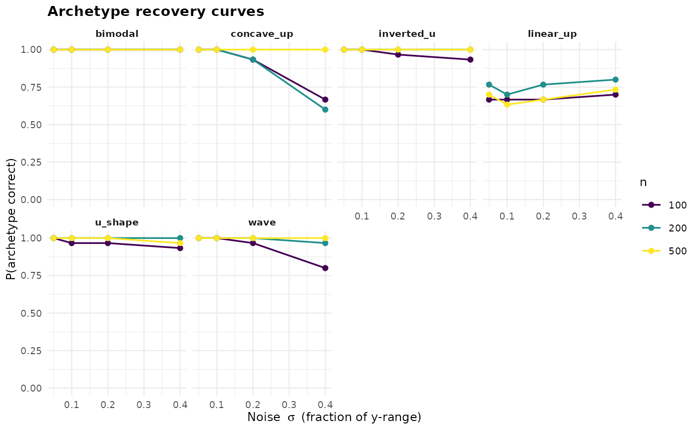

![[Experimental]](figures/lifecycle-experimental.svg)
Run a full-factorial sensitivity sweep for the janusplot 27-category
shape classifier. For each combination of ground-truth shape, sample
size n, noise level sigma, and replicate, the sweep:
Generates
npoints from the noiseless canonical curve on[0, 1]+ Gaussian noise with SD =sigma(fraction of the y-range, so signal-to-noise is comparable across shapes).Fits
mgcv::gam(y ~ s(x), method = "REML").Runs
janusplot_shape_metrics()to classify the fitted smooth.Records correctness at both the fine (27-category) and archetype (7-family) levels.
The result is a data frame of class janusplot_sensitivity.
summary() aggregates it to a per-cell accuracy table and plot()
draws one of four diagnostics.
The function is the package-native implementation of
simulation/scripts/scenario_4_shape_recognition.R. A small
precomputed dataset is shipped as shape_sensitivity_demo for
downstream examples without requiring users to re-run the sweep.
Usage
janusplot_shape_sensitivity(
shapes = c("linear_up", "linear_down", "convex_up", "concave_up", "convex_down",
"concave_down", "s_shape", "u_shape", "inverted_u", "skewed_peak", "broad_peak",
"wave", "bimodal", "bi_wave"),
n_grid = c(50L, 100L, 200L, 500L),
sigma_grid = c(0.02, 0.05, 0.1, 0.2, 0.4),
n_rep = 200L,
cutoffs = janusplot_shape_cutoffs(),
parallel = FALSE,
seed = 2026L,
verbose = interactive()
)
# S3 method for class 'janusplot_sensitivity'
summary(object, level = c("fine", "archetype"), ...)
# S3 method for class 'janusplot_sensitivity'
plot(
x,
type = c("confusion_fine", "confusion_archetype", "accuracy_grid", "recovery_curves"),
...
)Arguments
- shapes
Character vector of ground-truth shape names, any subset of the 14 canonical shapes in the default. They span five archetypes (
monotone_linear,monotone_curved,unimodal,wave,multimodal);chaoticanddegeneratehave no realistic deterministic generator. The default is every shape, andNULLis equivalent to the default.- n_grid
Integer vector of sample sizes. Default
c(50L, 100L, 200L, 500L).- sigma_grid
Numeric vector of noise levels (fraction of the y-range). Default
c(0.02, 0.05, 0.10, 0.20, 0.40).- n_rep
Integer. Replicates per cell. Default
200L.- cutoffs
Named list of classification thresholds; see
janusplot_shape_cutoffs().- parallel
Logical. If
TRUEandfuture.applyis installed, dispatch replicates in parallel. The caller is responsible for configuringfuture::plan()(e.g.future::plan(future::multisession)).- seed
Integer. Base seed – each fit uses
seed + row_indexso results are reproducible and cell-permutation-invariant.- verbose
Logical. Print progress messages to the console. Default is
interactive().- object, x
A
janusplot_sensitivitydata frame returned byjanusplot_shape_sensitivity(), or a plain data frame with the same columns.- level
The level at which
summary()scores correctness:"fine"(default, the 27-category label) or"archetype"(the 7-family label).- ...
Unused; present for compatibility with the generics.
- type
The diagnostic
plot()draws:"confusion_fine"27 x (|shapes|) confusion matrix at the fine category level – rows = ground truth, columns = predicted, cells coloured by
P(pred | truth)."confusion_archetype"7 x 7 confusion matrix at the archetype level.
"accuracy_grid"per-shape heatmap of archetype-level accuracy across the
(n, sigma)design."recovery_curves"accuracy as a function of sigma, one line per sample size, faceted by shape.
Value
janusplot_shape_sensitivity() returns a data frame of class
c("janusplot_sensitivity", "data.frame") with one row per fit.
Columns:
truthGround-truth shape name.
nSample size for this fit.
sigmaNoise level for this fit.
seedRNG seed used.
predictedClassifier output at the fine (27-category) level.
correctLogical – does
predicted == truth?archetype_truthExpected archetype for
truth.archetype_predArchetype of
predicted.archetype_correctLogical – archetype-level correctness.
monotonicity_indexMonotonicity index
M(seejanusplot_shape_metrics()).convexity_indexConvexity index
C(seejanusplot_shape_metrics()).n_turn,n_inflectRecovered turning-point and inflection counts.
error"gam_fit_failed"whenmgcv::gam()errored;NAotherwise.
summary() returns a data frame with columns truth, n, sigma
and accuracy, one row per cell of the design, where accuracy is
the mean correctness at level.
plot() returns a ggplot2::ggplot object.
Examples
# Tiny-run smoke test (< 2 seconds): 3 shapes x 2 n x 2 sigma x 5 reps.
res <- janusplot_shape_sensitivity(
shapes = c("linear_up", "u_shape", "wave"),
n_grid = c(100L, 200L),
sigma_grid = c(0.05, 0.20),
n_rep = 5L,
verbose = FALSE
)
head(res)
#> truth n sigma seed predicted correct archetype_truth archetype_pred
#> 1 linear_up 100 0.05 2027 linear_up TRUE monotone_linear monotone_linear
#> 2 u_shape 100 0.05 2028 u_shape TRUE unimodal unimodal
#> 3 wave 100 0.05 2029 wave TRUE wave wave
#> 4 linear_up 200 0.05 2030 linear_up TRUE monotone_linear monotone_linear
#> 5 u_shape 200 0.05 2031 u_shape TRUE unimodal unimodal
#> 6 wave 200 0.05 2032 wave TRUE wave wave
#> archetype_correct monotonicity_index convexity_index n_turn n_inflect error
#> 1 TRUE 1.00000000 0.00000000 0 0 <NA>
#> 2 TRUE 0.02660353 0.97687462 1 0 <NA>
#> 3 TRUE -0.10122089 0.13500728 2 1 <NA>
#> 4 TRUE 1.00000000 0.00000000 0 0 <NA>
#> 5 TRUE 0.06946110 0.99996456 1 0 <NA>
#> 6 TRUE -0.08666081 0.04843386 2 1 <NA>
summary(res, level = "archetype")
#> truth n sigma accuracy
#> 1 linear_up 100 0.05 0.8
#> 2 u_shape 100 0.05 1.0
#> 3 wave 100 0.05 1.0
#> 4 linear_up 200 0.05 0.8
#> 5 u_shape 200 0.05 1.0
#> 6 wave 200 0.05 1.0
#> 7 linear_up 100 0.20 0.6
#> 8 u_shape 100 0.20 1.0
#> 9 wave 100 0.20 1.0
#> 10 linear_up 200 0.20 0.8
#> 11 u_shape 200 0.20 1.0
#> 12 wave 200 0.20 1.0
# The precomputed demo carries the class, so the methods apply directly.
data("shape_sensitivity_demo", package = "janusplot")
head(summary(shape_sensitivity_demo, level = "archetype"))
#> truth n sigma accuracy
#> 1 bimodal 100 0.05 1.0000000
#> 2 concave_up 100 0.05 1.0000000
#> 3 inverted_u 100 0.05 1.0000000
#> 4 linear_up 100 0.05 0.6666667
#> 5 u_shape 100 0.05 1.0000000
#> 6 wave 100 0.05 1.0000000
plot(shape_sensitivity_demo, "recovery_curves")
